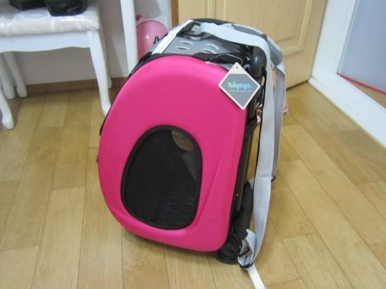
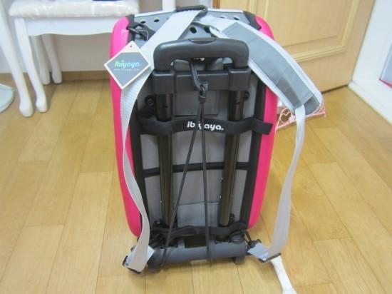
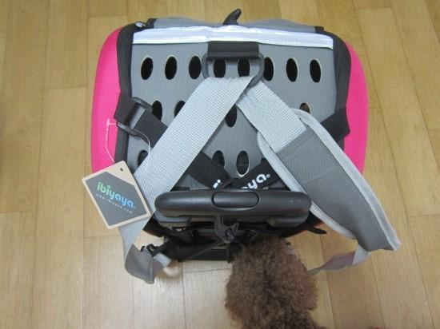
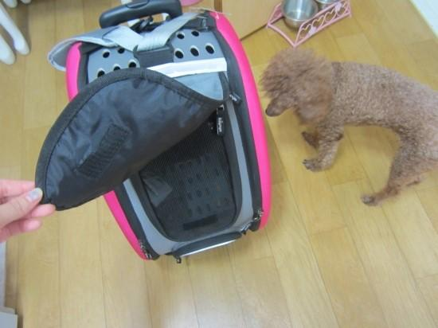
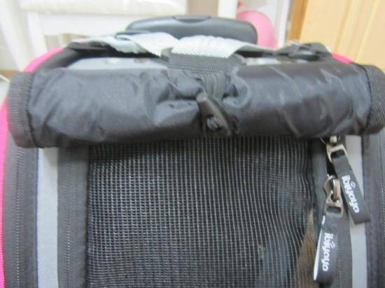
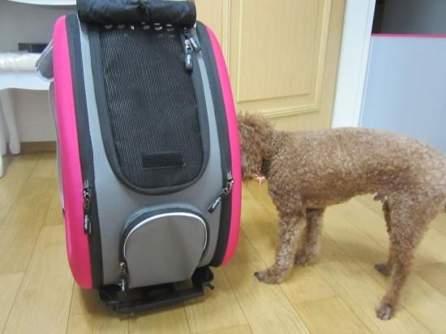

도기 이비야야 베리어스 캐리어 샀어용~
색상은 핫핑크색!
사실 이동가방을 마니 쓰는 편은 아니지만..
그래도 한번 나갈때마다 어깨가 빠지는듯하여..
이제 둘째도 있고 하니 4.5kg 의 푸들과 1.1kg의 포메를 (<-앞으로 계속 성장할 예정..)
함께 데리고 다닐려면 뭐가 좋을까 하다가
유모차는 좀 부끄러워서 패쓰하고;
그동안 별로 관심도 없었던 베리어스캐리어를
갑자기 충동적으로 구매하게 되었어요;

요기 어깨끈도 있어서 배낭처럼 맬수도 있어요!
매면 웃김 ㅋㅋ 보따리장수 같아요.
한쪽으로만 들면 숄더백도되용
중간에 저 고무줄은 바퀴달린뼈대와 가방을 이어주는 역할을 하는데
후크를 풀면 가방과 뼈대가 분리되요!

손잡이에 달린 동그란버튼을 누르면서 당기면
쭉쭉 길어져요~~

덮개도 달려있구용~
덮개를 걷으면 요렇게 그물망이 뿅

덮개를 돌돌 말아서
고정시킬수있는 고무줄도 달려있어요
여러가지로 세심하게 신경쓴듯;

이동가방만 꺼내면
어디 나가는줄 알고 좋아하는 타미군~
역시나 흥미를 가지네용
첫 시승은 타미가~
아주 얌전하게 잘 계시네용
너때문에 산거야 ㅠ 니가 너무 무거워서..
타미랑 캔디 같이 탄 모습!
캔디도 이곳저곳 탐색중!
두아이가 탔는데도 공간이 넉넉해요~
코너나 모퉁이 돌때 옆으로 잘 자빠지고
너무 덜컹거려서 좀 그렇긴한데
그래도 그런점 조심하면
그냥 들거나 매는 가방보다는 훨씬 편한것같애요!
|